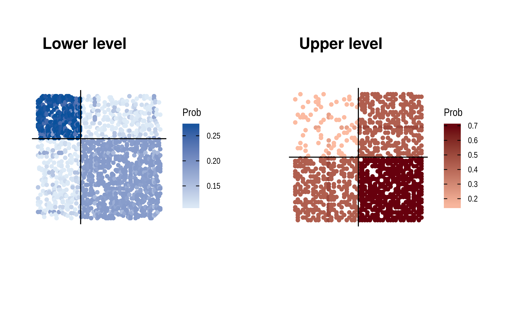
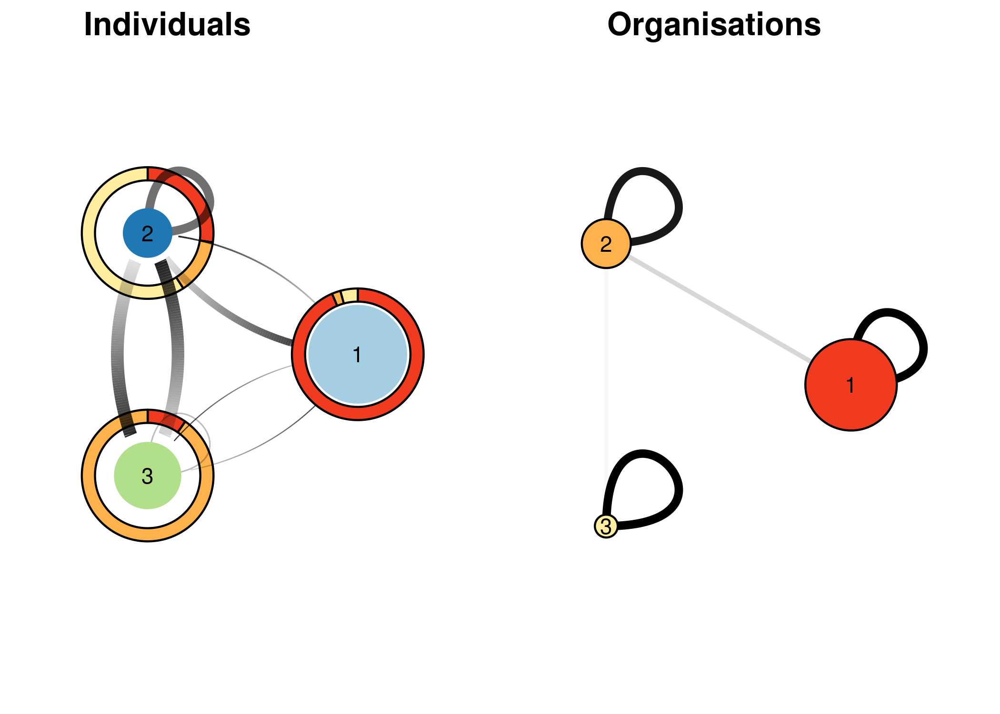

This is an implementation of a Stochastic Block Model for Multilevel Network (MLVSBM) as described in the following preprint: https://arxiv.org/abs/1910.10512
Installation
You can install the released version of MLVSBM from github with:
devtools::install_github("Chabert-Liddell/MLVSBM")
Tutorial
The package deals with multilevel network defined as the junction of two interaction network (adjacency matrices) linked by an affiliation relationship (affiliation matrix).
First, we’re going to simulate a multilevel network with 100 individuals and 3 clusters of individuals for the lower level and 50 organizations and 3 clusters for the upper level. The inter-organizational level will have an assortative structure and will be undirected, the inter-individual’s one a core-periphery structure and will be directed. Affiliation matrix will be generated by a power law and the dependence between the stucture of the two levels will be strong.
set.seed(123) my_mlvsbm <- MLVSBM::mlvsbm_simulate_network( n = list(I = 100, O = 50), # Number of nodes for the lower level and the upper level Q = list(I = 3, O = 3), # Number of blocks for the lower level and the upper level pi = c(.5, .3, .2), # Block proportion for the upper level, must sum to one gamma = matrix(c(.8, .1, .1, # Block proportion for the lower level, .1, .8, .1, .1, .1, .8), # each column must sum to one nrow = 3, ncol = 3, byrow = TRUE), alpha = list(I = matrix(c(.1, .1, .3, .1, .2, .5, .1, .5, .5), nrow = 3, ncol = 3, byrow = TRUE), # Connection matrix O = matrix(c(.5, .1, .1, .1, .5, .1, .1, .1, .5), nrow = 3, ncol = 3, byrow = TRUE)),# between blocks directed = list(I = TRUE, O = FALSE), # Are the upper and lower level directed or not ? affiliation = "preferential", # How the affiliation matrix is generated no_empty_org = FALSE) # May the affiliation matrix have column suming to 0 #> alpha[[1]] is not symmetric but level is directed!!!
The network is stocked in an R6 object of type MLVSBM.
Now, we are going to create a multilevel network object from 2 existing adjacency matrix and an affiliation matrix :
lower_level <- my_mlvsbm$adjacency_matrix$I # matrix of size nI x nI upper_level <- my_mlvsbm$adjacency_matrix$O # matrix of size nO x nO affiliation <- my_mlvsbm$affiliation_matrix # matrix of size nI x nO my_mlvsbm2 <- MLVSBM::mlvsbm_create_network(X = list(I = lower_level, O = upper_level), A = affiliation)
We can now infer the parameters, blocks and edge probabilities of our network by using the mlvlsbm_esimate_network function on an MLVSBM object. It will return the best model for this network as another R6 object of type FitMLVSBM.
fit <- MLVSBM:::mlvsbm_estimate_network(my_mlvsbm) #> [1] "Infering lower level :" #> [1] "# cluster : 1, ICL = -4887.05674111248 !" #> [1] "# cluster : 2, ICL = -4804.99021954573 !" #> [1] "# cluster : 3, ICL = -4660.50928166488 !" #> [1] "# cluster : 2, ICL = -4598.95889897355 !" #> [1] "# cluster : 5, ICL = -4701.28622891318 !" #> [1] "# cluster : 4, ICL = -4587.60800963499 !" #> [1] "# cluster : 3, ICL = -4488.25919549706 !" #> [1] "Infering upper level :" #> [1] "# cluster : 1, ICL = -699.732829123695 !" #> [1] "# cluster : 2, ICL = -655.852064636327 !" #> [1] "# cluster : 3, ICL = -625.901870227343 !" #> [1] "# cluster : 2, ICL = -624.784594377997 !" #> [1] "# cluster : 3, ICL = -623.96254347691 !" #> [1] "# cluster : 5, ICL = -666.926581692393 !" #> [1] "# cluster : 4, ICL = -640.831005661602 !" #> [1] "# cluster : 3, ICL = -623.035833937817 !" #> [1] "======= # Individual clusters : 3 , # Organisation clusters 3, ICL : -5002.74498144572========" #> [1] "======= # Individual clusters : 3 , # Organisation clusters 2, ICL : -4995.34282943409========" #> [1] "======= # Individual clusters : 3 , # Organisation clusters 3, ICL : -4976.33718935498========" #> [1] "======= # Individual clusters : 3 , # Organisation clusters 3, ICL : -4976.33718935498========" #> [1] "ICL for independent levels : -5111.29502943488" #> [1] "ICL for interdependent levels : -4976.33718935498" #> [1] "=====Interdepence is detected between the two level====="
Ploting the results
We can plot some synthetic view of the network :
Plotting adjacency matrices reordered by block with the link probability of each observed link.
ggdraw()+ draw_plot( t(fit$X_hat$I * lower_level) %>% as_tbl_graph() %>% mutate(group = fit$Z$I) %>% ggraph('matrix', sort.by = group)+ geom_edge_point(aes(color = weight))+ scale_edge_color_gradient(name = 'Prob', low = "#deebf7", high = "#08519c") + geom_hline(yintercept = cumsum(table(fit$Z$I))[-fit$nb_clusters$I]+.5) + geom_vline(xintercept = cumsum(table(fit$Z$I))[-fit$nb_clusters$I]+.5) + scale_y_reverse() + coord_fixed() + theme_graph() , 0, 0, .5, 1 ) + draw_plot( t(fit$X_hat$O * upper_level) %>% as_tbl_graph() %>% ggraph('matrix', sort.by = fit$Z$O) + geom_edge_point(aes(color = weight)) + geom_hline(yintercept = cumsum(table(fit$Z$O))[-fit$nb_clusters$O]+.5) + geom_vline(xintercept = cumsum(table(fit$Z$O))[-fit$nb_clusters$O]+.5) + scale_edge_colour_gradient(name = 'Prob',low = "#fcbba1", high = "#67000d") + scale_y_reverse() + coord_fixed() + theme_graph(), x = 0.5, y = 0, width = .5, height = 1 ) + draw_plot_label(label = c("Lower level", "Upper level"), x = c(0, .5), y = c(.9, .9))

To plot a synthetic view of the interaction between block and between the two levels :
tidy_clust_ind <- tidygraph::as_tbl_graph(fit$parameters$alpha$I) %>% mutate(name = seq(fit$nb_clusters$I)) %>% mutate(A = fit$parameters$gamma[,1]) %>% mutate(B = fit$parameters$gamma[,2]) %>% mutate(C = fit$parameters$gamma[,3]) tidy_clust_org <- tidygraph::as_tbl_graph(fit$parameters$alpha$O) %>% mutate(name = seq(fit$nb_clusters$O)) ind_layout <- create_layout(tidy_clust_ind, layout = "circle") df_pie <- tibble::tibble(group = rep(seq(fit$nb_clusters$I), fit$nb_clusters$O), x = rep(ind_layout$x, fit$nb_clusters$O), y = rep(ind_layout$y, fit$nb_clusters$O), amount = as.vector(table(list(fit$Z$I, fit$affiliation_matrix %*% fit$Z$O))), size = rep(as.integer(table(fit$Z$I)), fit$nb_clusters$O), affiliation = rep(seq(fit$nb_clusters$O), each=fit$nb_clusters$I)) weight_ind <- as.vector(fit$parameters$alpha$I) weight_org <- as.vector(fit$parameters$alpha$O) p_clustind <- ggraph(ind_layout, width = weight, alpha = weight) + ggforce::geom_arc_bar( aes(x0 = x, y0 = y, r0 = 0.8*max(size)/length(fit$Z$I),r = 1*max(size)/length(fit$Z$I), fill = as.factor(affiliation), amount = amount), stat = "pie", data = df_pie)+ geom_edge_loop(aes(width = ( weight_ind > 0.05) * (weight_ind + 0.1)*.8, alpha = ( weight_ind > 0.05) * (weight_ind + 0.1) ))+ geom_edge_fan(aes( start_cap = circle(radius = df_pie$size[node1.name]/length(fit$Z$I)*25, "mm"), end_cap = circle(radius = df_pie$size[node2.name]/length(fit$Z$I)*25, "mm"), alpha = ..index.., width = (weight_ind>0.05)*(weight_ind+0.1)), spread = 2)+ geom_node_point(aes(stroke = .35*as.integer(table(fit$Z$I)), colour = as.factor(seq(fit$nb_clusters$I)))) + geom_node_text(aes(label = name)) + theme_graph(foreground = NA)+ coord_equal()+ scale_fill_brewer(palette = "YlOrRd", name = "Organisation", direction = -1) + scale_colour_brewer(palette = "Paired", name = "Individual") + scale_size_continuous(range = range(df_pie$size)/fit$nb_clusters$I)+ scale_edge_alpha(range = c(0,1), guide = "none")+ scale_edge_width(range = c(0, 3), guide = "none")+ guides(size=FALSE, colour=FALSE, width=FALSE, fill = FALSE) #> Warning: The spread argument has been deprecated in favour of strength p_clustorg <- ggraph(tidy_clust_org, layout = "circle") + geom_edge_link(aes( alpha = (weight_org>0.05)*weight_org, width = (weight_org>0.05)*weight_org)) + geom_edge_loop(aes(width = (weight_org>0.05)*(weight_org+0.1)*.8, alpha = (weight_org>0.05)*(weight_org+0.1) ))+ geom_node_circle(aes(r = .5*as.integer(table(fit$Z$O))/length(fit$Z$O), fill = as.factor(seq(fit$nb_clusters$O))))+ geom_node_text(aes(label = name)) + theme_graph(foreground = NA)+ coord_equal()+ scale_fill_brewer(palette = "YlOrRd", name = "Organisation", direction = -1) + scale_colour_brewer(palette = "Paired", name = "Individual") + scale_edge_alpha(range = c(0,1), guide = "none")+ scale_edge_width(range = c(1, 2), guide = "none")+ guides(size=FALSE, colour=FALSE, width=FALSE, fill = FALSE) ggdraw() + draw_plot(plot = p_clustind, x = 0, y = 0, width = .5, height = 1)+ draw_plot(plot = p_clustorg, x = .5, y = 0, width = .5, height = 1)+ draw_plot_label(label = c("Individuals", "Organisations"), x = c(0, 0.5))

Some useful output
Output of the algorithm are stocked in the MLVSBM and FitMLVSBM objects. The MLVSBM object stocks information of the observed or simulated network and a list of all the fitted SBM and MLVSBM models.
my_mlvsbm$ICL # A data frame of the inferred models #> # A tibble: 3 x 4 #> index Q_I Q_O ICL #> <int> <int> <int> <dbl> #> 1 1 3 3 -5003. #> 2 2 3 2 -4995. #> 3 3 3 3 -4976. my_fit <- my_mlvsbm$fittedmodels[[which.max(my_mlvsbm$ICL$ICL)]] # The fitted model with index the highest ICL my_mlvsbm$ICL_sbm # The ICL of the SBM #> $lower #> [1] -4887.057 -4598.959 -4488.259 -4587.608 -4701.286 -Inf -Inf #> [8] -Inf -Inf -Inf #> #> $upper #> [1] -699.7328 -624.7846 -623.0358 -640.8310 -666.9266 -Inf -Inf #> [8] -Inf -Inf -Inf my_sbm_lower <- my_mlvsbm$fittedmodels_sbm$lower[[3]] # A fitted SBM for the lower level with 3 blocks my_sbm_upper <- my_mlvsbm$fittedmodels_sbm$upper[[2]] # A fitted SBM for the upper level with 2 blocks
You can also get the parameters and the clustering of the fitted model from the FitMLVSBM object as follows:
fit$parameters # The connectivity and membership parameters of the model #> $alpha #> $alpha$I #> [,1] [,2] [,3] #> [1,] 0.09481972 0.2988389 0.09540188 #> [2,] 0.11121891 0.4610379 0.48386911 #> [3,] 0.09402907 0.4897345 0.15806480 #> #> $alpha$O #> [,1] [,2] [,3] #> [1,] 0.51851781 0.09761996 0.05102242 #> [2,] 0.09761996 0.46666478 0.05714401 #> [3,] 0.05102242 0.05714401 0.52380278 #> #> #> $pi #> $pi$O #> [1] 0.5599993 0.3000001 0.1400006 #> #> #> $gamma #> [,1] [,2] [,3] #> [1,] 0.83018651 0.03125228 1.333362e-01 #> [2,] 0.11320841 0.09375111 8.666608e-01 #> [3,] 0.05660508 0.87499661 3.066647e-06 fit$Z # The membership of each nodes #> $I #> [1] 1 2 3 1 2 3 2 3 3 1 3 2 1 2 3 3 1 1 1 3 3 3 3 1 1 3 1 3 3 3 2 2 3 1 3 3 1 #> [38] 3 1 2 3 2 1 1 2 3 1 1 2 3 2 1 3 2 1 1 2 2 1 3 3 1 1 2 3 2 2 1 1 3 1 1 1 1 #> [75] 1 1 1 2 1 1 1 1 1 1 1 2 3 2 1 1 3 1 1 1 1 3 2 1 3 1 #> #> $O #> [1] 1 3 1 1 1 2 2 3 2 2 2 2 3 2 3 1 1 1 1 1 3 1 1 1 1 2 3 1 1 1 1 1 2 1 1 1 2 1 #> [39] 2 1 1 2 2 1 1 1 2 1 3 2 fit$vbound # A vector of the varational bound of the VEM algorithm #> [1] -4895.876 tau <- fit$membership # The variational parameters of the model pred <- fit$X_hat # The links predictions for each level